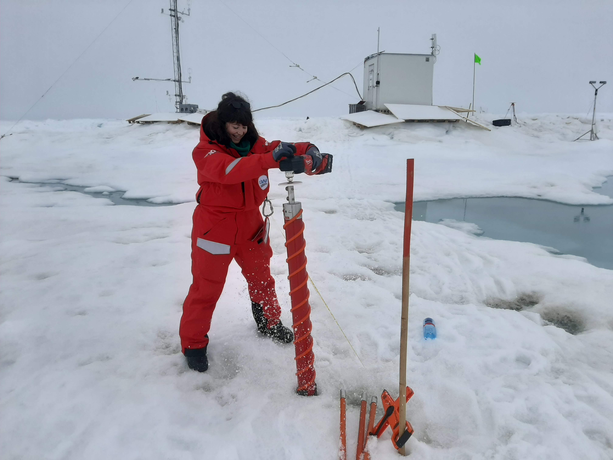
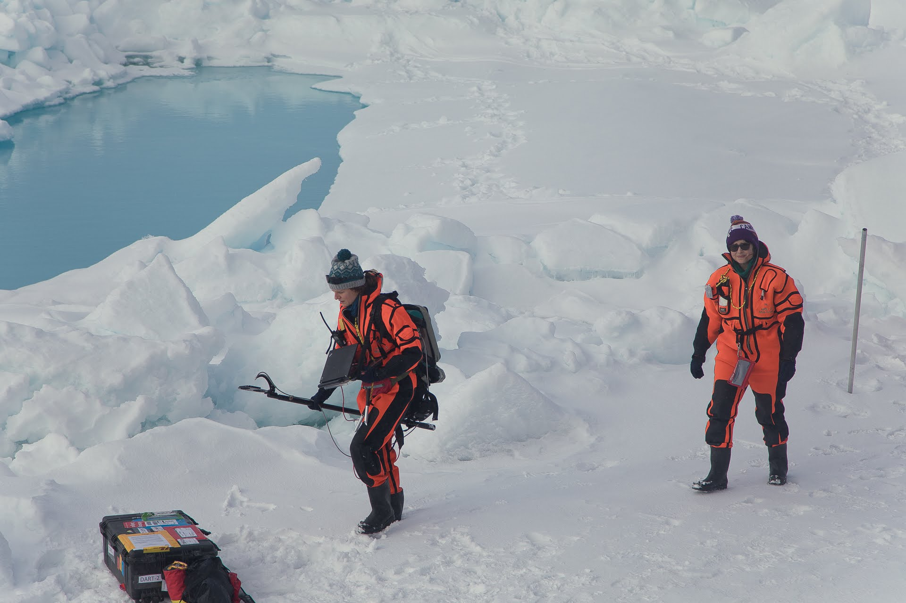
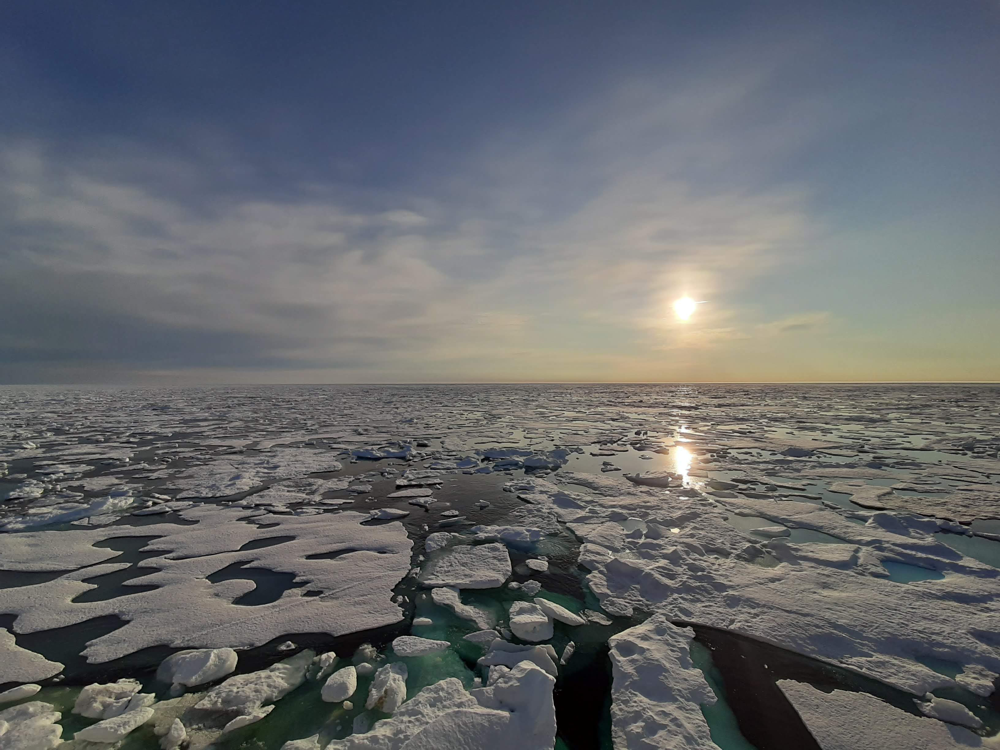

01
Observe
Measure snow, ice conditions, melt ponds, leads, roughness, and other properties directly in the field.
Expeditions & field observations
Field observations provide the physical context behind remote-sensing measurements - connecting microwave signals with snow, melt ponds, sea-ice structure, and the constantly changing polar environment.



Why fieldwork matters
Satellite observations allow us to investigate the polar oceans across enormous spatial scales, but interpreting those observations requires understanding what is physically happening at the surface.
Fieldwork has shaped how I approach remote sensing. Snow depth, melt ponds, roughness, flooding, leads, and changing ice structure are not abstract variables in a retrieval algorithm - they are features of an extraordinarily heterogeneous and dynamic environment.
Connecting those physical conditions with satellite observations remains a central part of how I think about polar remote sensing.
Central Arctic Ocean · 2020
Multidisciplinary drifting Observatory for the Study of Arctic Climate
In summer 2020, I participated in Leg 4 of the MOSAiC expedition in the Central Arctic Ocean, spending two months aboard the research icebreaker RV Polarstern.
Working on drifting sea ice transformed the way I interpret satellite observations. Features that appear as a few pixels in a SAR image become complex combinations of snow, melt ponds, roughness, leads, ice type, and changing thermodynamic conditions when observed directly.
My work included observations of snow and sea ice, snowpits and transects, melt-pond measurements, and experiments around leads and the evolving summer ice cover.
I also contributed to the on-ice remote-sensing site, working with instruments including radiometers, radar and scatterometer systems used to connect ground observations with microwave measurements.
MOSAiC continues to influence how I approach satellite remote sensing. It reinforced the importance of connecting what a sensor measures with the physical mechanisms producing that signal.
That perspective now carries into my work on multifrequency SAR, passive-microwave sea-ice concentration, and wave-ice interactions.
Perspective
My first experience on sea ice changed how I understood the datasets I had been working with.
From a satellite image, the surface can appear organized into relatively clean regions. Standing on the ice reveals something very different: variability occurs over metres, centimetres, and sometimes even smaller scales.
Snow redistribution, deformation, small melt features, changes in roughness, and transitions between ice types can all occur within a footprint that a satellite sensor may represent as a single measurement.
That experience made uncertainty much more tangible and motivated my interest in combining observations at different spatial scales.
From field to satellite
Measure snow, ice conditions, melt ponds, leads, roughness, and other properties directly in the field.
Use those observations to understand how different physical conditions modify microwave scattering and emission.
Apply that physical understanding to satellite observations across the marginal ice zone and the wider polar oceans.